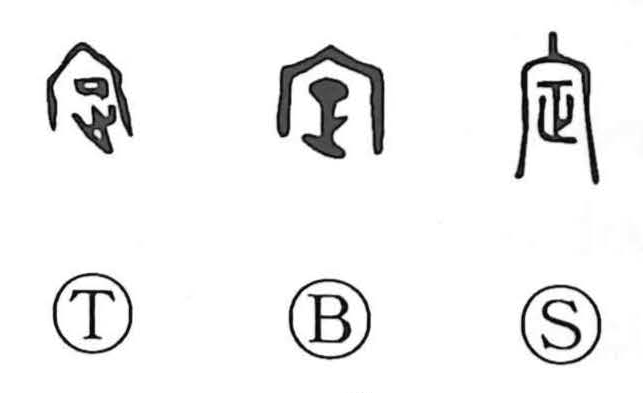

定

Kun: sadameru, sadamaru, sadaka | On: tei, jou
to decide ・ to determine ・ to fix ・ settled
Explanation
定 combines 宀, a building, with 正, setting straight or in the proper direction. It concerns fixing a building's position and orientation.
The asterism called 定星 was also known as 営室, associated with establishing a dwelling. Its position was used to determine direction when laying out a building. This gives a concrete setting for the act of settling something in its proper place.
From an established position come stability, peaceful residence, and calm. The same action extends to arranging, correcting, choosing, and deciding. What has been 定 is no longer unsettled: its place or course has been determined.